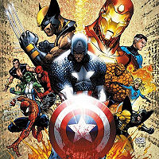

Los Vengadores
 De: La Frikipedia, la enciclopedia extremadamente seria.
De: La Frikipedia, la enciclopedia extremadamente seria.
| De la serie Superhéroes:
|
| Los Vengadores
|
| 
|
| Los Vengadores en la cola para el baño
|
|
| Nacimiento:
|
1963
|
| Muerte:
|
Pendiente
|
| Superpoderes:
|
Desde ser una chapa hasta, hasta hombres de verde.
|
| Debilidad:
|
Erectil
|
| Asistente
|
Tú, El, Yo
|
| Notas:
|
Sub-especie de heroes
|
The Avengers, o Los Avengeros si hablamos en spanish, es un grupo de marginados sociales, fracasados, mutantes, lacras, vagos, pelotudos atómicos y/o nucleares que forman o formaron parte de un equipo de superhéroes abocado a la tarea de defender la Tierra de amenazas extraterrestres, sobrenaturales, interdimensionales, intergalácticas, internacionales, internas, interescolares, robóticas, y demás mierdas villánicas, todo esto cortesía de Jack Kirby. Este equipo de superfrikis debutó en The Avengers #1 (no, no Lee y Kirby. Esos debutaron antes).
Integrantes
Los Vengadores eran originalmente los siguientes héroes:
- Iron Man: Alias Antonio Stark, clase alta altísima y sólo comprometido con la bebida. Como a todo niño rico, nada le viene bien, así que cambia de armadura aproximadamente 6 veces por historia. En una época donde el transplante de corazón no existía, Stark se agarra un terrible pedo para olvidarse de su enfermedad cardíaca, y de repente se le caen unas chapas del techo y se le clavan en el corazón, curándolo milagrosamente. Inicialmente conocido como Chapa Boy, debió buscar un nombre digno de respeto y un uniforme presentable.
- Hulk: El Dr. Bruce Banner, en un intento por construir una bomba Gamma para el excelente ejército yanqui, se ve atrapado en la explosión de su propio invento. La radiación lo transforma en una mezcla de Mike Tyson y un bañero (por los pantalones cortos). Contra lo que comúnmente se cree, Banner adquirió su color verde manzana no por los rayos gamma sino por la gran cantidad de espárragos que consumió el día de su accidente. Hulk abandonó el equipo por problemas con la talla del uniforme que le correspondía.
- Henry Pym: Alias Ant Man (sí, el Hombre Hormiga), alias Giant Man, alias Goliath, alias Yellowjacket, alias Wasp II, alias Enrique, bien podría tener el poder de cambiar de alias cada minuto y medio. Este muchacho tiene como habilidades reducir su tamaño (por fortuna para él, nunca fue apachurrado por la maligna suela de un cualquiera), en algunos casos aumentarlo, lanzar rayos de bio-energía, y utilizar aparatos para entablar comunicación con hormigas e insectos similares y controlar sus mentes (algo así como Aquaman, pero más inútil).
- Wasp: La novia del susodicho Enrique comparte la mayoría de sus poderes y además tiene la capacidad de volar. Se rumorea que Wasp dejó a Pym, lo que provocó la desviación homosexual del chico y su consecuente transformación en Wasp II (¿dónde viste un macho apodado "La Avispa"?)
- Thor: Thor Odinson, dios del trueno nórdico, el Poderoso, El Intento de Marvel por innovar, que no es más que una Demostración de Plagio a la cultura europea. Es un rubio físicoculturista que revolea 20 horas por día su Martillo y es Asgardiano (de Asgard, tierra de Dioses nórdicos... aprendan, niños). Tiene una relacion amor-odio con su hermano cockbloquero Loki.
- Capitán América: Éste no estaba en el grupo original, pero se coló en el equipo al tiempo de que empezó y se volvió el líder sin que nadie dijera ni mu. Es un yanqui nacionalista re-power dedicado a matar latinos y terroristas o latinos terroristas o a la cuarta reencarnación del primo segundo del sobrino de Hitler, o a una mezcla entre estas tres especies de criminales (donde saldría algo muy parecido al Carlo). Además tiene un escudo mágico que funciona como escudo, bumerang y arma al mismo tiempo. Por desgracia, todavía no incluye Bluetooth.
A lo largo de los años, más deformes aparecieron y desaparecieron, como éstos:
- EymardMan
- SuperRoy
- Iron Man/Chapa Boy/Chapa Man/Iron Boy/Iron Guy/Robert Downey Jr.
- Bruja Escarlata
- Quicksilver
- Hércules
- Black Knight
- Black Panther
- Pink Panther
- Black Widow
- Black Etc.
- Swordsman
- Mantis (no-religiosa)
- Moondragon
- Bestia
- Wonder Man
- She-Hulk
- Los Power Rangers
- Starfox (el zorrito de Nintendo)
- Mockingbird (¿el ave de los mocos?)
- Human Torch
- Spider Woman
- Namor
- El Hombre Que Araña
- Thriatlon
- Demolition Man (el flaco de la demolición)
- Two Gun Kid (el pendejo de Dos Armas)
- Luke Cage (si, yo tampoco lo conocia, es un negro grandote con la piel indestructible)
- Ares
- eDonkey
- Duracell
- Wolverine
- Wall-Mart
- Hawkeye
- Pringles
- Firestar
- Johnny Depp
- Heath Ledger (QEPD)
- Doctor Strange
- Doctor House
- Capitán América
- Capitán Bretaña (es como Capitán América, pero habla como un estirado)
- Capitán Kirk
- Capitán Picard
- Crystal (no Billy)
- Crystal (este sí es Billy)
- Dios
- Dios resucitado (no me pregunten como murió)
- Dios (traje negro)
- Quásar
- Púlsar
- Amásar
- War Machine
- Machine Man
- Terminator 3: Rise of the Machines
- Darkhawk
- Un fumao
- Sersi
- Justice (faaa! estaban inspirados ese día)
- Yondu
- Yoda
- Starhawk
- Ravonna
- Echo
- Dicho
- Thing (La Mole, La Cosa, La Deformidad de Piedra)
- Tigra
- Tigro
- Iron Patriot
- Sentry
- Weegee
Requisitos para unirse
- Poseer un nombre heroico, sin importar cuán patético, idiota u obvio sea (El sujeto de la IP sin registrar podría servir).
- Demostrar que se tienen habilidades especiales, sea la teletransportación o tocarse la punta de la nariz con la lengua.
- Usar un traje lo suficientemente apretado (véase Resolución Heroica 19/60).
- No verse afeminado con el traje (opcional)
- Odiar los productos de la editorial DC.
- Plagiar los productos de la editorial DC.
- Tener la capacidad de morir y resucitar al menos 10 veces (sin usar las esferas del dragon claro).
¿Sabías que...
- ...en una realidad alterna, todos los Avengers murieron, pero fueron resucitados por un tal mutante Nosequé Franklin?
- ...el cuartel general de los Avengers era una mansión?
- ...esa mansión fue destruida y los tipos se desbandaron?
- ...los Avengers Next son del futuro y son casi todos hijos de los originales?
- ...Ud puede ser un Avenger y no saberlo?
- ...Los juegos acerca de los Vengadores son hediondos?
- ...En una serie de comics de Marvel llamada Marvel Zombies, todos los superhéroes se convierten en zombis comegente, incluidos los Avengers?
Autor(es):
- SakuraMiya
- Soydebolson 95
- Tc
- Maito
- Gñapero Solitario
- Black heart
- Pentagram Lord
- APAGANDOLAOSCURIDAD
- Generibot
- El cirujano raro
Frikipedia 2005-2016, Licencia
GFDL 1.2 - Extraído por FrikiLeaks